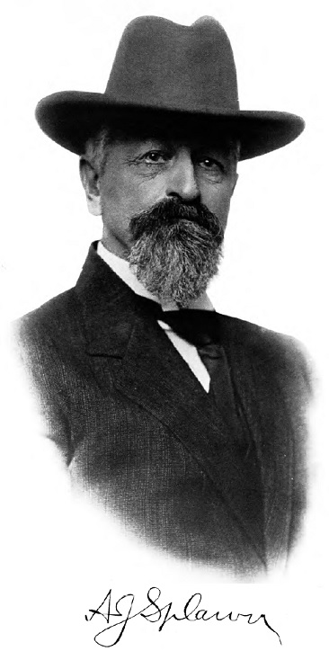

Andrew Jackson Splawn: Settler, Cattleman, Politician, and Historian
Andrew Jackson “Jack” Splawn (1845–1917) lived through the transformation of central Washington from Indigenous country into an American settler society. He helped bring cattle, commerce, irrigation, transportation, and municipal government to the Yakima Valley. Near the end of his life, he also tried to preserve the memories of Indigenous leaders who had resisted that transformation. This combination makes him both an important historical witness and a source who must be read critically.
From Missouri to Washington Territory
Splawn was born in Missouri in July 1845, the youngest child of John and Nancy McHaney Splawn. His father died when Jack was very young. Around 1851 or 1852, his widowed mother brought the family over the Oregon Trail to Linn County, Oregon. The surviving accounts differ by a year, but agree that he was about six years old.
In September 1860, at fifteen, he left Brownsville, Oregon, with his older brother Charles. They crossed the Cascades by the Barlow Road, traveled through The Dalles, and entered Washington Territory to live in the Klickitat Valley. Splawn later wrote that his brother’s stories had awakened in him “the slumbering restlessness of the pioneer.” His arrival came only two years after Colonel George Wright’s campaign had broken organized Indigenous military resistance in the Inland Northwest.
A Young Cowboy in Indigenous Country
At sixteen Splawn went to work for Major John Thorp and joined a long cattle drive from the Yakima country to the Cariboo goldfields of British Columbia. Over the following years he drove herds through central Washington, the Okanogan, British Columbia, Idaho, Montana, and eastern Oregon. These journeys followed routes Indigenous people and fur traders had used long before American settlement.
Much of what we know about these years comes from Splawn himself. He recalled that a young Klickitat woman named Lallooh warned him of danger and helped save his life; he later gave her name to his daughter. He also credited Columbia leader Chief Moses with preventing an attack on one cattle drive and described an encounter with Okanogan leader Tonasket after Splawn shot a suspected cattle thief. These stories show how dependent early settlers could be upon Indigenous knowledge, protection, and diplomacy. They are also adventure narratives remembered many decades later, and their dialogue cannot be treated as a literal transcript.
Meeting Kamiakin
Splawn said that in 1865, while traveling through the Palouse country with Willis Thorp, he unknowingly hired Kamiakin as a guide. Only when they reached a trading post did Splawn recognize the older man as the Yakama leader of the recent war. In Splawn’s telling, Kamiakin explained that he had fought until his warriors were dead or scattered and now wished to live in peace.
“There is no more war. I wish to live in peace until the Great Spirit calls me to take the long trail.” Kamiakin, as recalled by A. J. Splawn
The encounter became central to Splawn’s later interpretation of Kamiakin as a patriot defending his country rather than simply an enemy of American settlement. At the same time, Splawn remained a settler who benefited from the transfer of Indigenous land into ranches, farms, towns, and transportation systems. That tension runs throughout his life and his writing.
Rancher, Merchant, and Builder of Settler Institutions
In 1870 Splawn and Ben Burch opened a small trading post near the Yakima River and Wilson Creek. A friend jokingly painted “Robber’s Roost” over the door, and the name remained. The post served settlers, travelers, and Indigenous customers and became the first commercial center on the site that developed into Ellensburg. Splawn later sold the business and returned to ranching.
During the 1880s he established Springdale Ranch in the Cowiche Valley. In 1887 he developed a purebred Hereford herd whose cattle won prizes and were eventually sold as far away as Alaska, Hawaii, and China. His business interests expanded well beyond ranching. He helped organize an early regional meat-packing company, promoted fruit packing and horticulture, worked with livestock associations, and served as a livestock agent for the Great Northern Railway.
Water development was another major part of his public life. Splawn became the first president of the Tieton Water Users’ Association and helped obtain the agreements needed for a federal reclamation project. Like his cattle and commercial ventures, irrigation contributed to the agricultural prosperity of the Yakima Valley while accelerating the permanent transformation of lands once used seasonally by Yakama families.
Politics and Civic Leadership
Splawn served in the Washington State Senate from 1903 to 1905. In 1908 he sought the Democratic nomination for governor but lost in the primary. He also helped organize the Yakima Valley Transportation Company and served as its first president from 1907 until 1911, when locally financed streetcars were linking North Yakima with the surrounding valley.
In 1911 he became the first mayor of North Yakima under its commission form of government, serving until 1914. Contemporary accounts praised him as a forceful reformer. His administration acted against prostitution and opium businesses, campaigns that were part of Progressive-era municipal reform but were also entangled with the racial prejudice directed at Chinese residents. This civic career illustrates Splawn’s transition from a teenage cowboy on Indigenous trails to a leader of the settler government and economy that replaced them.
Listening to Indigenous Witnesses
For more than twenty years, Splawn gathered stories about the Yakama War and the early history of the Inland Northwest. In the preface to Ka-mi-akin: The Last Hero of the Yakimas, he said his purpose was “to present the Indian side of the War of 1855–8.” He interviewed older chiefs, warriors, relatives, interpreters, and settlers. Among the most valuable passages are his extended conversations with Lo-Kout, son of Ow-hi, who identified himself as the young guide called Loolowcan in Theodore Winthrop’s The Canoe and the Saddle.
Splawn’s long residence in the region and his personal relationships gave him access to memories that many other white writers never heard. He openly admired Kamiakin and argued that Indigenous people had fought for their homeland for reasons Americans should understand. His book therefore preserves names, places, family connections, and Indigenous interpretations often absent from military reports.
How Should Splawn Be Read?
Splawn was not a trained historian, ethnologist, or stenographer. He rarely identifies precisely when, where, in what language, or through which interpreter a statement was recorded. Speeches appear in polished English, and conversations remembered after fifty years are presented as exact dialogue. The book also contains the paternalistic language and broad generalizations about Indigenous people common among white writers of his generation.
Edmond S. Meany, reviewing the book in 1917 for The Washington Historical Quarterly, called it a “distinct contribution” to Pacific Northwest history. He also observed that Splawn provided few citations and was “very largely his own authority,” warning readers to test his claims against government archives and other firsthand evidence. That remains the soundest way to use the book today: not to dismiss it, and not to accept every detail literally, but to compare it with tribal oral history, contemporary documents, archaeology, and later scholarship.
Family, Final Work, and Legacy
Splawn married Margaret Cecilian Larsen in 1897. Their children were Andrew Jackson Jr., Homer Bayard, and Lallooh. Margaret shared his interest in regional history and played an important role in preserving, organizing, and editing his papers.
Jack Splawn finished Ka-mi-akin but died in North Yakima on March 2, 1917, before seeing it published. His widow completed the publication arrangements, and the first edition appeared later that year under her copyright. In the 1940s she helped edit and republish it. Splawn’s papers, together with Margaret’s work and later family research, are now preserved at Central Washington University.
Splawn’s lasting importance does not rest only on his colorful life. His career embodies the settler transformation of central Washington, while his historical work preserved voices describing what that transformation cost Indigenous people. Read with care, his book allows both sides of that complicated legacy to remain visible.
Sources and Further Reading
- A. J. Splawn, Ka-mi-akin: The Last Hero of the Yakimas (Portland: Kilham Stationery & Printing Co., 1917), especially the preface, Chapters XIX–XXIII, and the biographical material following the main text.
- Homer B. Splawn Papers, 1860–2007, MS10, Archives and Special Collections, Central Washington University. The finding aid includes a detailed family biography and describes A. J. and Margaret Splawn’s manuscripts, correspondence, business records, photographs, and publication materials.
- Edmond S. Meany, “Review of Ka-mi-akin, The Last Hero of the Yakimas,” The Washington Historical Quarterly 8, no. 4 (October 1917): 308–309.
- Paula Becker, “Andrew Jackson Splawn and Ben Burch open a trading post, ‘Robber’s Roost,’ on the site of the future Ellensburg in 1870”, HistoryLink.org Essay 5122, January 25, 2003.
- Journal of the Senate of the State of Washington, Eighth Biennial Session (Olympia, 1903), the official record of Splawn’s legislative service.